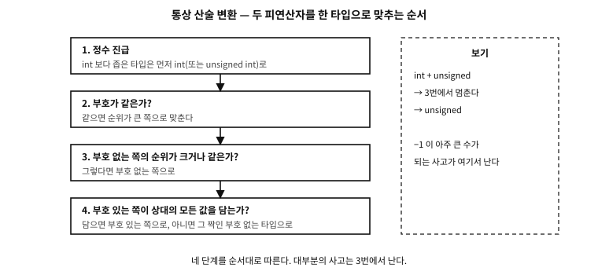

30 암묵적 변환(implicit conversion) — 진급과 통상 산술 변환
먼저 알아야 할 것
돌아보기
6장에서 부호 확장(8→16비트 넓히기)을 배웠고, 29장 끝에서 “작은 그릇의 값은 계산 전에 자동으로 넓혀진다”고 스쳤다. 그러면 char + char의 결과 타입은 char인가?
답. 아니다 — int다. 그리고 이 사실이 이 장의 출발점이다. C의 산술 연산은 작은 정수 타입 위에서 일어나지 않는다. 계산 전에 모두 int(또는 더 큰 타입)로 넓힌 뒤 계산하고, 결과도 그 넓은 타입이다. 왜 그런지, 어디까지 그런지가 이 장의 내용이다.
이 장의 필요성과 맥락
이 장이 끝나면
이 장에서 답할 질문
- 이 규칙들을 다 외워야 하는가?
이 장이 내내 쓰는 낱말 — 산술 타입, 정수 타입, 정수 진급(integer promotion)의 대상 — 은 27장에서 정의한 그대로다. 헷갈리면 그 갈래를 다시 펴 보면 된다.
30.1 규칙 1 — 정수 진급#
정수 진급(integer promotion): char, short, bool, 비트 필드처럼 int보다 작은 정수 타입의 값이 산술 연산에 참여하면, 계산 전에 int로 넓혀진다(int가 그 값들을 다 담을 수 있으면 int로, 아니면 unsigned int). 비트 정밀 정수(_BitInt, 28장)는 이 규칙의 예외라 진급하지 않는다 — 부록 C 가 그 범위를 적어 둔다.
examples/conversions/conv.c
#include <stdint.h>
#include <stdio.h>
int main(void)
{
/* 정수 진급: char·short는 계산 전에 int로 넓혀진다 */
signed char a = 100;
signed char b = 100;
printf("100 + 100 (as chars) = %d\n", a + b); /* 200 — char에는 안 담기는 값 */
/* 통상 산술 변환: 부호 없는 쪽이 이긴다 —
-1을 unsigned의 눈으로 읽으면 거대한 양수가 된다 */
int neg = -1;
printf("(unsigned)(-1) = %u\n", (unsigned)neg);
printf("so -1 < 1u is false\n");
/* 정수 나눗셈 vs 실수 나눗셈 — 캐스트로 의도를 밝힌다 */
int total = 7, count = 2;
printf("7 / 2 = %d\n", total / count);
printf("(double)7/2 = %.1f\n", (double)total / count);
/* 가변 인자의 기본 진급: float는 double로, char/short는 int로 */
float f = 1.5f;
printf("float 1.5f via %%f = %f (promoted to double)\n", f);
return 0;
}
실행 결과
100 + 100 (as chars) = 200
(unsigned)(-1) = 4294967295
so -1 < 1u is false
7 / 2 = 3
(double)7/2 = 3.5
float 1.5f via %f = 1.500000 (promoted to double)
첫 줄이 그 확인이다 — signed char 100끼리 더했는데 결과가 200이다. char에는 담기지 않는 값인데도 넘치지 않은 이유는, 덧셈이 char의 세계가 아니라 int의 세계에서 일어났기 때문이다.
이유는 기계에 있다(12장). CPU의 계산 회로와 레지스터는 워드 크기 근처의 정수를 다루도록 만들어져 있어서, 작은 타입만을 위한 별도 산술을 두는 것이 오히려 비효율이다. C는 그 현실을 언어 규칙으로 받아들였다 — 작은 타입은 저장의 단위이지 계산의 단위가 아니다.
30.2 규칙 2 — 통상 산술 변환#
진급 뒤에도 두 피연산자의 타입이 다르면, 통상 산술 변환(usual arithmetic conversions)이 공통 타입 하나를 정한다. 실무에서 기억할 순서는 이렇다.
- 한쪽이 실수면 실수 쪽으로 (
long double>double>float). - 둘 다 정수면 — 더 넓은 쪽으로. 폭이 같으면 부호 없는 쪽이 이긴다.
정수끼리의 규칙을 표준의 순서대로 펼치면 네 단계다.

그림 30.1 — 정수끼리의 통상 산술 변환은 네 단계를 순서대로 따른다. 대부분의 사고는 3번에서 난다.
「폭이 같으면 부호 없는 쪽이 이긴다」는 규칙이 함정의 원천이다. 시연의 둘째 부분이 그 실물이다 — -1을 unsigned의 눈으로 읽으면 42억이 넘는 거대한 양수가 된다(6장의 모듈러 세계 그대로다). 그래서 -1 < 1u 같은 비교는 직관과 반대로 거짓이 된다. 배열 인덱스나 크기 계산(sizeof의 결과는 부호 없는 size_t다!)에서 부호 있는 값과 섞이면 조용히 사고가 나는 이유가 이것이다.
다행히 이 함정은 컴파일러가 잘 지킨다 — 18장에서 켜 둔 경고가 부호 섞인 비교를 지목해 준다(이 책의 예제 하나도 그 경고에 걸려 다시 쓰였다). 수칙으로 줄이면: 부호 있는 것과 없는 것을 한 비교에 섞지 않는다. 크기·인덱스는 size_t 계열로 일관되게 쓰거나, 명시적 캐스트로 의도를 드러낸다.
30.3 규칙 3 — 가변 인자에 걸리는 기본 인자 진급#
세 번째 변환은 인자 개수가 정해지지 않은 함수 — printf 같은 가변 인자 함수 — 에서 일어난다. 원형에 타입이 적혀 있지 않은 자리로 넘어가는 인자에는 기본 인자 진급(default argument promotions)이 적용된다: float는 double로, 작은 정수 타입은 int로 넓혀진다.
시연의 마지막 줄이 그 확인이다 — float 값을 %f로 찍었는데 잘 나온다. 서식 %f는 사실 double을 기대하는데, float 인자가 진급해 double이 되어 도착했기 때문이다(그래서 printf에는 float 전용 서식이 아예 없다). 23장에서 배운 “서식과 재료의 계약”에 이 진급 규칙이 숨은 조항으로 들어 있는 셈이다 — 이 계약의 전모와 가변 인자 함수를 직접 만드는 법은 67장에서 정면으로 다룬다.
실제 사례. 변환 하나가 날린 로켓 — 아리안 5, 1996
흔한 오해. “캐스트는 값을 바꾸지 않고 해석만 바꾼다”
(int)3.9는 3이 되고(소수부 버림), (char)300은 그릇에 안 들어가 잘리며(6장의 축소), (unsigned)-1은 거대한 양수가 된다. C의 캐스트는 “이 비트를 저 타입으로 읽어라”가 아니라 “이 값을 저 타입의 값으로 변환하라”는 뜻이다 — 비트를 그대로 두고 눈만 바꾸고 싶다면 49장의 공용체나 memcpy가 그 통로다. 두 요구를 같은 문법으로 쓰지 않는 것이 C의 몇 안 되는 친절이다.문. 이 규칙들을 다 외워야 하는가?
답. 세 줄이면 충분하다 — 작은 정수는 int로 진급된다, 섞이면 넓은 쪽· 부호 없는 쪽으로 간다, 가변 인자에서는 float가 double이 된다. 나머지 세부는 부록의 표에 두고, 실무에서는 두 습관이 규칙 암기를 대신한다: 경고를 켜 두는 것(18장), 그리고 의도가 있는 변환은 캐스트로 명시하는 것. 암묵 변환의 위험은 규칙의 복잡함이 아니라 그것이 보이지 않는다는 데 있으므로, 보이게 만드는 것이 최선의 방어다.
변환의 갈래를 갖췄다. 다음 장부터 흐름의 도구다 — 판단을 값으로 만드는 불리언과 비교부터.
주
- ARIANE 5 Flight 501 Failure: Report by the Inquiry Board. 1996. European Space Agency / CNES, Paris.
sci.esa.int/web/cluster/-/38889↩